Metric learning for image similarity search using TensorFlow Similarity
Author: Owen Vallis
Date created: 2021/09/30
Last modified: 2022/02/29
Description: Example of using similarity metric learning on CIFAR-10 images.

Overview
This example is based on the "Metric learning for image similarity search" example. We aim to use the same data set but implement the model using TensorFlow Similarity.
Metric learning aims to train models that can embed inputs into a high-dimensional space such that "similar" inputs are pulled closer to each other and "dissimilar" inputs are pushed farther apart. Once trained, these models can produce embeddings for downstream systems where such similarity is useful, for instance as a ranking signal for search or as a form of pretrained embedding model for another supervised problem.
For a more detailed overview of metric learning, see:
Setup
This tutorial will use the TensorFlow Similarity library to learn and evaluate the similarity embedding. TensorFlow Similarity provides components that:
- Make training contrastive models simple and fast.
- Make it easier to ensure that batches contain pairs of examples.
- Enable the evaluation of the quality of the embedding.
TensorFlow Similarity can be installed easily via pip, as follows:
pip -q install tensorflow_similarity
import random
from matplotlib import pyplot as plt
from mpl_toolkits import axes_grid1
import numpy as np
import tensorflow as tf
from tensorflow import keras
import tensorflow_similarity as tfsim
tfsim.utils.tf_cap_memory()
print("TensorFlow:", tf.__version__)
print("TensorFlow Similarity:", tfsim.__version__)
TensorFlow: 2.7.0
TensorFlow Similarity: 0.15.5
Dataset samplers
We will be using the CIFAR-10 dataset for this tutorial.
For a similarity model to learn efficiently, each batch must contains at least 2 examples of each class.
To make this easy, tf_similarity offers Sampler objects that enable you to set both
the number of classes and the minimum number of examples of each class per
batch.
The train and validation datasets will be created using the
TFDatasetMultiShotMemorySampler object. This creates a sampler that loads datasets
from TensorFlow Datasets and yields
batches containing a target number of classes and a target number of examples
per class. Additionally, we can restrict the sampler to only yield the subset of
classes defined in class_list, enabling us to train on a subset of the classes
and then test how the embedding generalizes to the unseen classes. This can be
useful when working on few-shot learning problems.
The following cell creates a train_ds sample that:
- Loads the CIFAR-10 dataset from TFDS and then takes the
examples_per_class_per_batch. - Ensures the sampler restricts the classes to those defined in
class_list. - Ensures each batch contains 10 different classes with 8 examples each.
We also create a validation dataset in the same way, but we limit the total number of examples per class to 100 and the examples per class per batch is set to the default of 2.
# This determines the number of classes used during training.
# Here we are using all the classes.
num_known_classes = 10
class_list = random.sample(population=range(10), k=num_known_classes)
classes_per_batch = 10
# Passing multiple examples per class per batch ensures that each example has
# multiple positive pairs. This can be useful when performing triplet mining or
# when using losses like `MultiSimilarityLoss` or `CircleLoss` as these can
# take a weighted mix of all the positive pairs. In general, more examples per
# class will lead to more information for the positive pairs, while more classes
# per batch will provide more varied information in the negative pairs. However,
# the losses compute the pairwise distance between the examples in a batch so
# the upper limit of the batch size is restricted by the memory.
examples_per_class_per_batch = 8
print(
"Batch size is: "
f"{min(classes_per_batch, num_known_classes) * examples_per_class_per_batch}"
)
print(" Create Training Data ".center(34, "#"))
train_ds = tfsim.samplers.TFDatasetMultiShotMemorySampler(
"cifar10",
classes_per_batch=min(classes_per_batch, num_known_classes),
splits="train",
steps_per_epoch=4000,
examples_per_class_per_batch=examples_per_class_per_batch,
class_list=class_list,
)
print("\n" + " Create Validation Data ".center(34, "#"))
val_ds = tfsim.samplers.TFDatasetMultiShotMemorySampler(
"cifar10",
classes_per_batch=classes_per_batch,
splits="test",
total_examples_per_class=100,
)
Batch size is: 80
###### Create Training Data ######
converting train: 0%| | 0/50000 [00:00<?, ?it/s]
The initial batch size is 80 (10 classes * 8 examples per class) with 0 augmenters
filtering examples: 0%| | 0/50000 [00:00<?, ?it/s]
selecting classes: 0%| | 0/10 [00:00<?, ?it/s]
gather examples: 0%| | 0/50000 [00:00<?, ?it/s]
indexing classes: 0%| | 0/50000 [00:00<?, ?it/s]
##### Create Validation Data #####
converting test: 0%| | 0/10000 [00:00<?, ?it/s]
The initial batch size is 20 (10 classes * 2 examples per class) with 0 augmenters
filtering examples: 0%| | 0/10000 [00:00<?, ?it/s]
selecting classes: 0%| | 0/10 [00:00<?, ?it/s]
gather examples: 0%| | 0/1000 [00:00<?, ?it/s]
indexing classes: 0%| | 0/1000 [00:00<?, ?it/s]
Visualize the dataset
The samplers will shuffle the dataset, so we can get a sense of the dataset by plotting the first 25 images.
The samplers provide a get_slice(begin, size) method that allows us to easily
select a block of samples.
Alternatively, we can use the generate_batch() method to yield a batch. This
can allow us to check that a batch contains the expected number of classes and
examples per class.
num_cols = num_rows = 5
# Get the first 25 examples.
x_slice, y_slice = train_ds.get_slice(begin=0, size=num_cols * num_rows)
fig = plt.figure(figsize=(6.0, 6.0))
grid = axes_grid1.ImageGrid(fig, 111, nrows_ncols=(num_cols, num_rows), axes_pad=0.1)
for ax, im, label in zip(grid, x_slice, y_slice):
ax.imshow(im)
ax.axis("off")
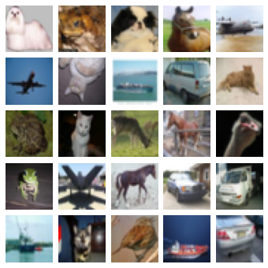
Embedding model
Next we define a SimilarityModel using the Keras Functional API. The model
is a standard convnet with the addition of a MetricEmbedding layer that
applies L2 normalization. The metric embedding layer is helpful when using
Cosine distance as we only care about the angle between the vectors.
Additionally, the SimilarityModel provides a number of helper methods for:
- Indexing embedded examples
- Performing example lookups
- Evaluating the classification
- Evaluating the quality of the embedding space
See the TensorFlow Similarity documentation for more details.
embedding_size = 256
inputs = keras.layers.Input((32, 32, 3))
x = keras.layers.Rescaling(scale=1.0 / 255)(inputs)
x = keras.layers.Conv2D(64, 3, activation="relu")(x)
x = keras.layers.BatchNormalization()(x)
x = keras.layers.Conv2D(128, 3, activation="relu")(x)
x = keras.layers.BatchNormalization()(x)
x = keras.layers.MaxPool2D((4, 4))(x)
x = keras.layers.Conv2D(256, 3, activation="relu")(x)
x = keras.layers.BatchNormalization()(x)
x = keras.layers.Conv2D(256, 3, activation="relu")(x)
x = keras.layers.GlobalMaxPool2D()(x)
outputs = tfsim.layers.MetricEmbedding(embedding_size)(x)
# building model
model = tfsim.models.SimilarityModel(inputs, outputs)
model.summary()
Model: "similarity_model"
_________________________________________________________________
Layer (type) Output Shape Param #
=================================================================
input_1 (InputLayer) [(None, 32, 32, 3)] 0
rescaling (Rescaling) (None, 32, 32, 3) 0
conv2d (Conv2D) (None, 30, 30, 64) 1792
batch_normalization (BatchN (None, 30, 30, 64) 256
ormalization)
conv2d_1 (Conv2D) (None, 28, 28, 128) 73856
batch_normalization_1 (Batc (None, 28, 28, 128) 512
hNormalization)
max_pooling2d (MaxPooling2D (None, 7, 7, 128) 0
)
conv2d_2 (Conv2D) (None, 5, 5, 256) 295168
batch_normalization_2 (Batc (None, 5, 5, 256) 1024
hNormalization)
conv2d_3 (Conv2D) (None, 3, 3, 256) 590080
global_max_pooling2d (Globa (None, 256) 0
lMaxPooling2D)
metric_embedding (MetricEmb (None, 256) 65792
edding)
=================================================================
Total params: 1,028,480
Trainable params: 1,027,584
Non-trainable params: 896
_________________________________________________________________
Similarity loss
The similarity loss expects batches containing at least 2 examples of each
class, from which it computes the loss over the pairwise positive and negative
distances. Here we are using MultiSimilarityLoss()
(paper), one of several losses in
TensorFlow Similarity. This loss
attempts to use all informative pairs in the batch, taking into account the
self-similarity, positive-similarity, and the negative-similarity.
epochs = 3
learning_rate = 0.002
val_steps = 50
# init similarity loss
loss = tfsim.losses.MultiSimilarityLoss()
# compiling and training
model.compile(
optimizer=keras.optimizers.Adam(learning_rate), loss=loss, steps_per_execution=10,
)
history = model.fit(
train_ds, epochs=epochs, validation_data=val_ds, validation_steps=val_steps
)
Distance metric automatically set to cosine use the distance arg to override.
Epoch 1/3
4000/4000 [==============================] - ETA: 0s - loss: 2.2179Warmup complete
4000/4000 [==============================] - 38s 9ms/step - loss: 2.2179 - val_loss: 0.8894
Warmup complete
Epoch 2/3
4000/4000 [==============================] - 34s 9ms/step - loss: 1.9047 - val_loss: 0.8767
Epoch 3/3
4000/4000 [==============================] - 35s 9ms/step - loss: 1.6336 - val_loss: 0.8469
Indexing
Now that we have trained our model, we can create an index of examples. Here we
batch index the first 200 validation examples by passing the x and y to the index
along with storing the image in the data parameter. The x_index values are
embedded and then added to the index to make them searchable. The y_index and
data parameters are optional but allow the user to associate metadata with the
embedded example.
x_index, y_index = val_ds.get_slice(begin=0, size=200)
model.reset_index()
model.index(x_index, y_index, data=x_index)
[Indexing 200 points]
|-Computing embeddings
|-Storing data points in key value store
|-Adding embeddings to index.
|-Building index.
0% 10 20 30 40 50 60 70 80 90 100%
|----|----|----|----|----|----|----|----|----|----|
***************************************************
Calibration
Once the index is built, we can calibrate a distance threshold using a matching strategy and a calibration metric.
Here we are searching for the optimal F1 score while using K=1 as our classifier. All matches at or below the calibrated threshold distance will be labeled as a Positive match between the query example and the label associated with the match result, while all matches above the threshold distance will be labeled as a Negative match.
Additionally, we pass in extra metrics to compute as well. All values in the output are computed at the calibrated threshold.
Finally, model.calibrate() returns a CalibrationResults object containing:
"cutpoints": A Python dict mapping the cutpoint name to a dict containing theClassificationMetricvalues associated with a particular distance threshold, e.g.,"optimal" : {"acc": 0.90, "f1": 0.92}."thresholds": A Python dict mappingClassificationMetricnames to a list containing the metric's value computed at each of the distance thresholds, e.g.,{"f1": [0.99, 0.80], "distance": [0.0, 1.0]}.
x_train, y_train = train_ds.get_slice(begin=0, size=1000)
calibration = model.calibrate(
x_train,
y_train,
calibration_metric="f1",
matcher="match_nearest",
extra_metrics=["precision", "recall", "binary_accuracy"],
verbose=1,
)
Performing NN search
Building NN list: 0%| | 0/1000 [00:00<?, ?it/s]
Evaluating: 0%| | 0/4 [00:00<?, ?it/s]
computing thresholds: 0%| | 0/989 [00:00<?, ?it/s]
name value distance precision recall binary_accuracy f1
------- ------- ---------- ----------- -------- ----------------- --------
optimal 0.93 0.048435 0.869 1 0.869 0.929909
Visualization
It may be difficult to get a sense of the model quality from the metrics alone. A complementary approach is to manually inspect a set of query results to get a feel for the match quality.
Here we take 10 validation examples and plot them with their 5 nearest neighbors and the distances to the query example. Looking at the results, we see that while they are imperfect they still represent meaningfully similar images, and that the model is able to find similar images irrespective of their pose or image illumination.
We can also see that the model is very confident with certain images, resulting in very small distances between the query and the neighbors. Conversely, we see more mistakes in the class labels as the distances become larger. This is one of the reasons why calibration is critical for matching applications.
num_neighbors = 5
labels = [
"Airplane",
"Automobile",
"Bird",
"Cat",
"Deer",
"Dog",
"Frog",
"Horse",
"Ship",
"Truck",
"Unknown",
]
class_mapping = {c_id: c_lbl for c_id, c_lbl in zip(range(11), labels)}
x_display, y_display = val_ds.get_slice(begin=200, size=10)
# lookup nearest neighbors in the index
nns = model.lookup(x_display, k=num_neighbors)
# display
for idx in np.argsort(y_display):
tfsim.visualization.viz_neigbors_imgs(
x_display[idx],
y_display[idx],
nns[idx],
class_mapping=class_mapping,
fig_size=(16, 2),
)
Performing NN search
Building NN list: 0%| | 0/10 [00:00<?, ?it/s]
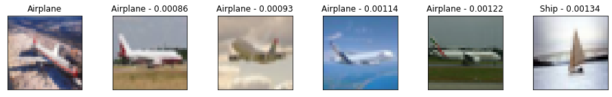
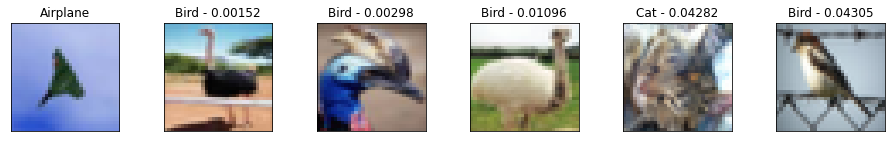
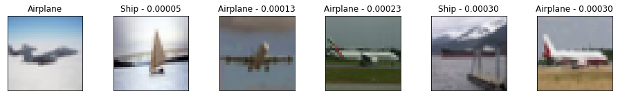
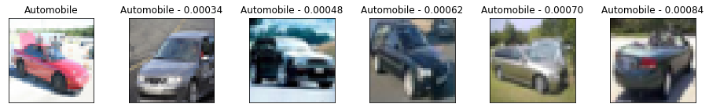
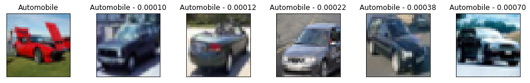
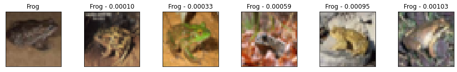
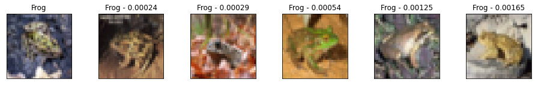
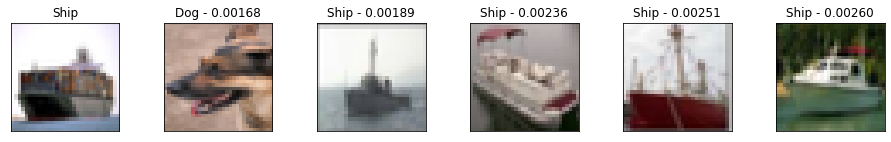
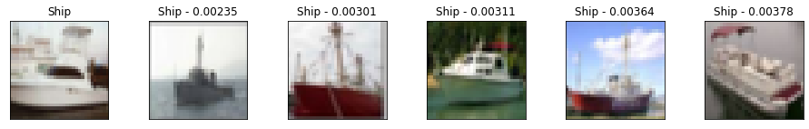
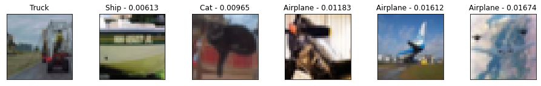
Metrics
We can also plot the extra metrics contained in the CalibrationResults to get
a sense of the matching performance as the distance threshold increases.
The following plots show the Precision, Recall, and F1 Score. We can see that the matching precision degrades as the distance increases, but that the percentage of the queries that we accept as positive matches (recall) grows faster up to the calibrated distance threshold.
fig, (ax1, ax2) = plt.subplots(1, 2, figsize=(15, 5))
x = calibration.thresholds["distance"]
ax1.plot(x, calibration.thresholds["precision"], label="precision")
ax1.plot(x, calibration.thresholds["recall"], label="recall")
ax1.plot(x, calibration.thresholds["f1"], label="f1 score")
ax1.legend()
ax1.set_title("Metric evolution as distance increase")
ax1.set_xlabel("Distance")
ax1.set_ylim((-0.05, 1.05))
ax2.plot(calibration.thresholds["recall"], calibration.thresholds["precision"])
ax2.set_title("Precision recall curve")
ax2.set_xlabel("Recall")
ax2.set_ylabel("Precision")
ax2.set_ylim((-0.05, 1.05))
plt.show()
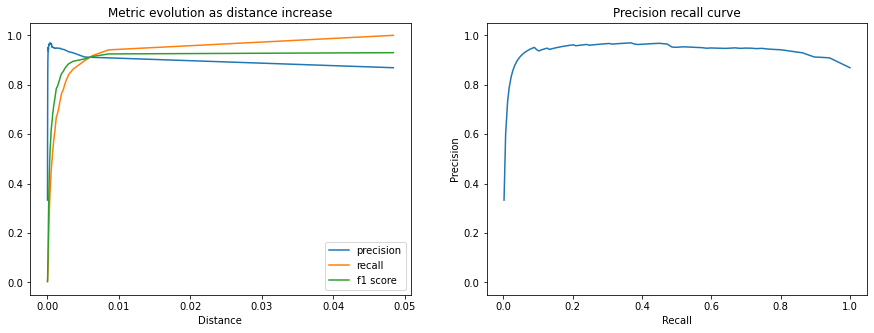
We can also take 100 examples for each class and plot the confusion matrix for each example and their nearest match. We also add an "extra" 10th class to represent the matches above the calibrated distance threshold.
We can see that most of the errors are between the animal classes with an interesting number of confusions between Airplane and Bird. Additionally, we see that only a few of the 100 examples for each class returned matches outside of the calibrated distance threshold.
cutpoint = "optimal"
# This yields 100 examples for each class.
# We defined this when we created the val_ds sampler.
x_confusion, y_confusion = val_ds.get_slice(0, -1)
matches = model.match(x_confusion, cutpoint=cutpoint, no_match_label=10)
cm = tfsim.visualization.confusion_matrix(
matches,
y_confusion,
labels=labels,
title="Confusion matrix for cutpoint:%s" % cutpoint,
normalize=False,
)
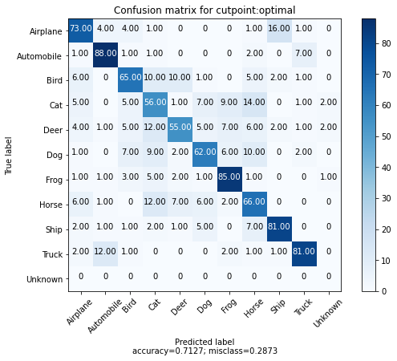
No Match
We can plot the examples outside of the calibrated threshold to see which images are not matching any indexed examples.
This may provide insight into what other examples may need to be indexed or surface anomalous examples within the class.
idx_no_match = np.where(np.array(matches) == 10)
no_match_queries = x_confusion[idx_no_match]
if len(no_match_queries):
plt.imshow(no_match_queries[0])
else:
print("All queries have a match below the distance threshold.")
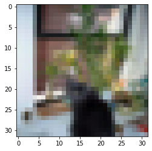
Visualize clusters
One of the best ways to quickly get a sense of the quality of how the model is doing and understand it's short comings is to project the embedding into a 2D space.
This allows us to inspect clusters of images and understand which classes are entangled.
# Each class in val_ds was restricted to 100 examples.
num_examples_to_clusters = 1000
thumb_size = 96
plot_size = 800
vx, vy = val_ds.get_slice(0, num_examples_to_clusters)
# Uncomment to run the interactive projector.
# tfsim.visualization.projector(
# model.predict(vx),
# labels=vy,
# images=vx,
# class_mapping=class_mapping,
# image_size=thumb_size,
# plot_size=plot_size,
# )